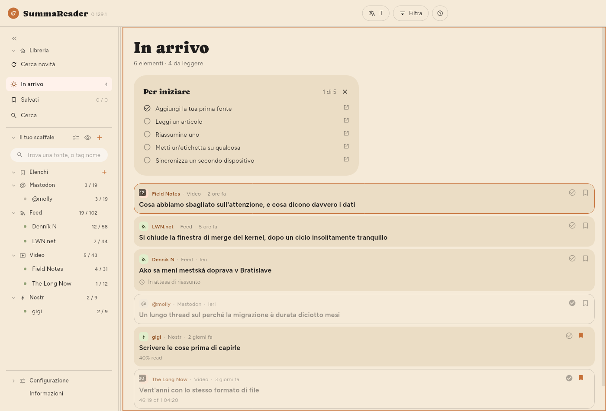
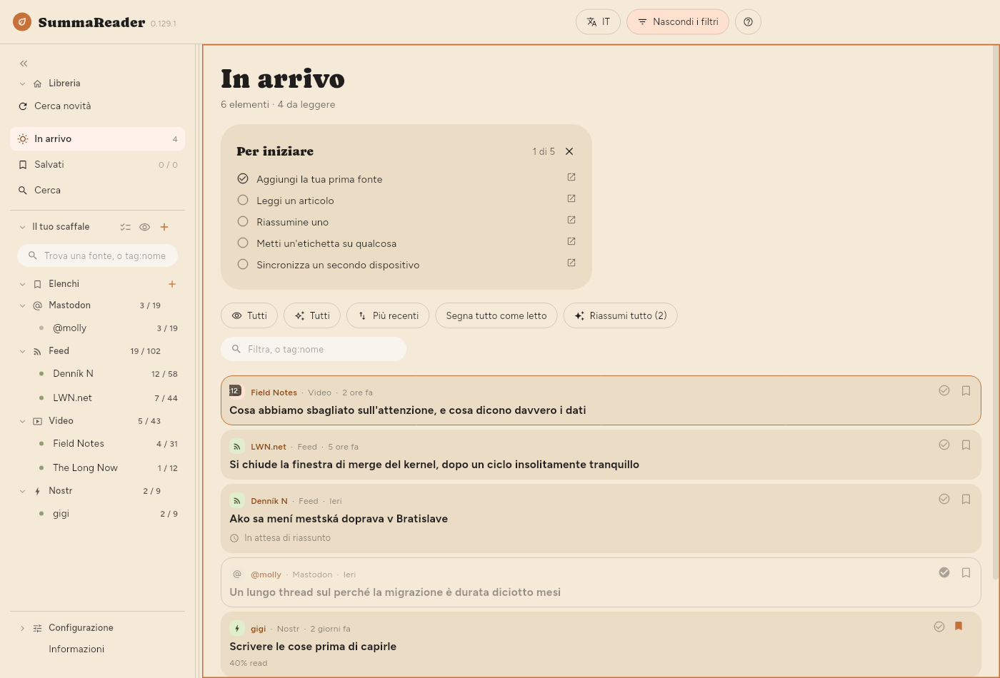

← Per cominciare · Indice · Lettura →
La finestra

La barra superiore
| Controllo | Che cosa fa |
|---|---|
| EN | La lingua dell’interfaccia |
| Filtra | Mostra e nasconde il pannello dei filtri |
| ? | Aiuto per ciò che è sullo schermo |
Filtra compare quando l’elenco è sullo schermo, anche mentre leggi un articolo accanto a esso. Il pulsante Filtra si riempie e diventa Filtrato ogni volta che qualcosa restringe l’elenco, così un elenco che mostra solo una parte di sé dice sempre perché. Su un telefono, ☰ apre lo scaffale e Filtra è il pulsante accanto a ?.
Lo scaffale
Lungo il lato sinistro: Libreria con Cerca novità, In arrivo, Salvati e Cerca, poi Il tuo scaffale con i tuoi Elenchi e i tuoi feed raggruppati per tipo, poi Configurazione in fondo. Ogni feed mostra da leggere / totale; ogni elenco mostra quanto contiene. Su un telefono lo scaffale è un cassetto, che si apre con ☰.
- Cerca novità controlla subito tutte le fonti.
- La casella in alto restringe lo scaffale e nient’altro: una parte del nome di un feed, oppure
tag:e una parte di un’etichetta. Basta una parte, quinditag:gamtrova siagamingsiaretro-gaming; e una parola breve prende molto, perchétag:aitrova anche un feed con l’etichettaretail, e!tag:ailo nasconde. La casella di testo nel pannello dei filtri vuole l’etichetta intera. - Fai clic su un feed per vedere solo quel feed.
- Fai clic su un elenco per vedere che cosa contiene: vedi Conservare le cose.
- Selezione multipla (le spunte accanto a Il tuo scaffale), oppure una pressione prolungata su una riga, mostra un ingranaggio su ogni feed. L’ingranaggio apre il pannello di quel feed: vedi Gestire le fonti.
- L’occhio accanto a + nasconde ogni feed che non ha niente in attesa.
- « riduce lo scaffale a una striscia di icone.
bfa lo stesso.
Il pannello dei filtri
Premi Filtra. Qui c’è tutto ciò che decide che cosa mostra l’elenco; il pannello è chiuso per impostazione predefinita, così la prima cosa sotto l’intestazione è il primo articolo.


| Controllo | Che cosa fa |
|---|---|
| Da leggere / Letti / Tutti | Quali elementi mostrare |
| Tutti / Riassunti / Non riassunti | Se esiste un riassunto |
| Più recenti | Ordinamento: premi per scorrere fra sei opzioni |
| Segna tutto come letto | Segna tutto ciò che il filtro include |
| Riassumi tutto | Riassume tutto ciò che il filtro include |
| Chip dei tipi | Video, feed, post: fai clic per restringere |
| La casella di testo | Cerca una parola nel titolo, nella fonte o nel riassunto, oppure tag:nome |
L’ordinamento scorre così: Più recenti → Meno recenti → Titolo A–Z → Titolo Z–A → Fonte A–Z → Fonte Z–A, e poi ricomincia.
Il filtro di lettura, il filtro dei riassunti e l’ordinamento vengono ricordati fra un avvio e l’altro. La scelta di un feed no: quella è navigazione, e aprire una libreria ristretta a un feed scelto la settimana scorsa sembrerebbe un’app vuota.
I conteggi sotto «In arrivo»
Mostrati 18 di 5.878 · 52 da leggere · 812 da riassumere
- Mostrati compare solo quando un filtro restringe l’elenco, e conta le righe effettivamente sullo schermo.
- da riassumere è lo stesso numero del pulsante Riassumi, ed è ciò che farebbe premendolo.
L’aspetto dell’elenco
| Impostazione | Dove |
|---|---|
| Dimensione del testo | Configurazione › Base › Aspetto › Testo › Dimensione del testo |
| Densità dell’elenco | Configurazione › Base › Aspetto › Elenco › Densità dell’elenco |
| Mostra l’elenco Per iniziare | Configurazione › Base › Aspetto › Elenco › Mostra l’elenco Per iniziare |
| Riassunto nell’elenco | Configurazione › Base › Aspetto › Elenco › Riassunto nell’elenco |
| Miniature | Configurazione › Base › Aspetto › Elenco › Miniature |
| Interlinea, Larghezza della colonna | Configurazione › Base › Aspetto › Articolo |
| Dove si trova l’articolo | Configurazione › Base › Aspetto › Disposizione |
| Raggruppa per fonte | Configurazione › Base › Aspetto › Elenco › Raggruppa per fonte |
Densità dell’elenco decide quanto di ogni elemento disegna l’elenco:
| Riassunto | Titolo | Immagine | |
|---|---|---|---|
| Comoda | mostrato | va a capo liberamente | grande |
| Compatta (predefinita) | — | due righe | piccola |
| Densa | — | una riga | nessuna |
Con Comoda scelta, Riassunto nell’elenco (Configurazione › Base › Aspetto › Elenco › Riassunto nell’elenco) decide quanto di ogni riassunto mostra una riga: 2 righe, 4 righe o il Riassunto completo (predefinito). Un articolo ancora senza riassunto mostra nello stesso punto, più tenue e con lo stesso limite, il suo inizio: la descrizione propria della fonte, oppure le prime parole del testo dell’articolo. La riga c’è solo con Comoda, perché Compatta e Densa non mostrano riassunti.
Miniature: Immagine mostra l’immagine propria di ogni articolo invece di un’icona del tipo. È l’unica delle tre opzioni che ha un costo: le immagini si scaricano poche alla volta per le righe sullo schermo, quindi un lungo arretrato si riempie poco a poco invece che tutto insieme. Densa ignora l’impostazione: un’immagine è alta tre righe, il che non è denso.